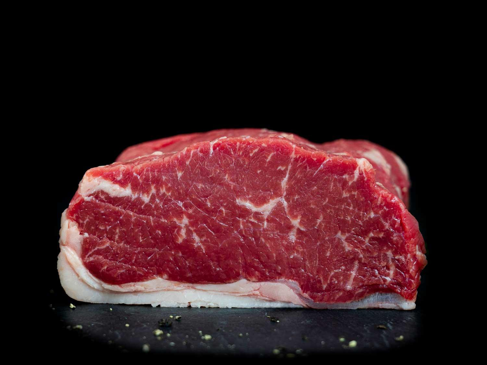
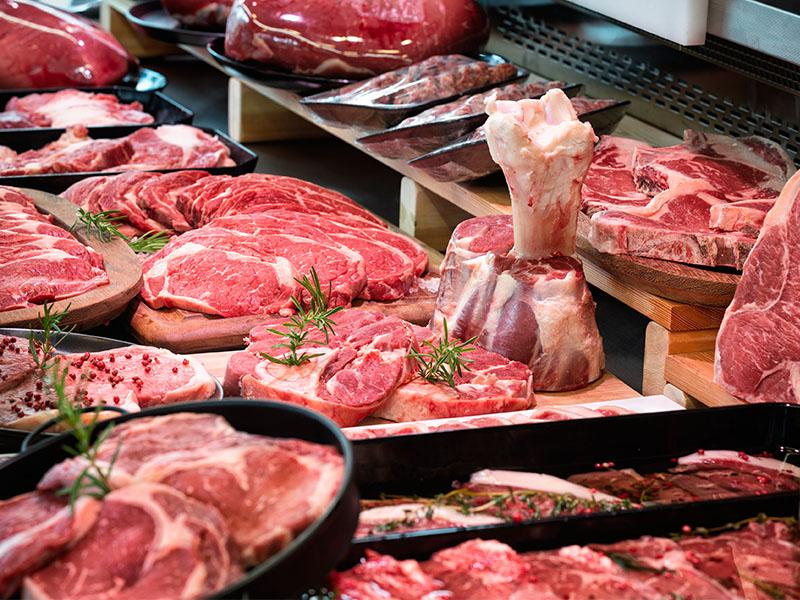
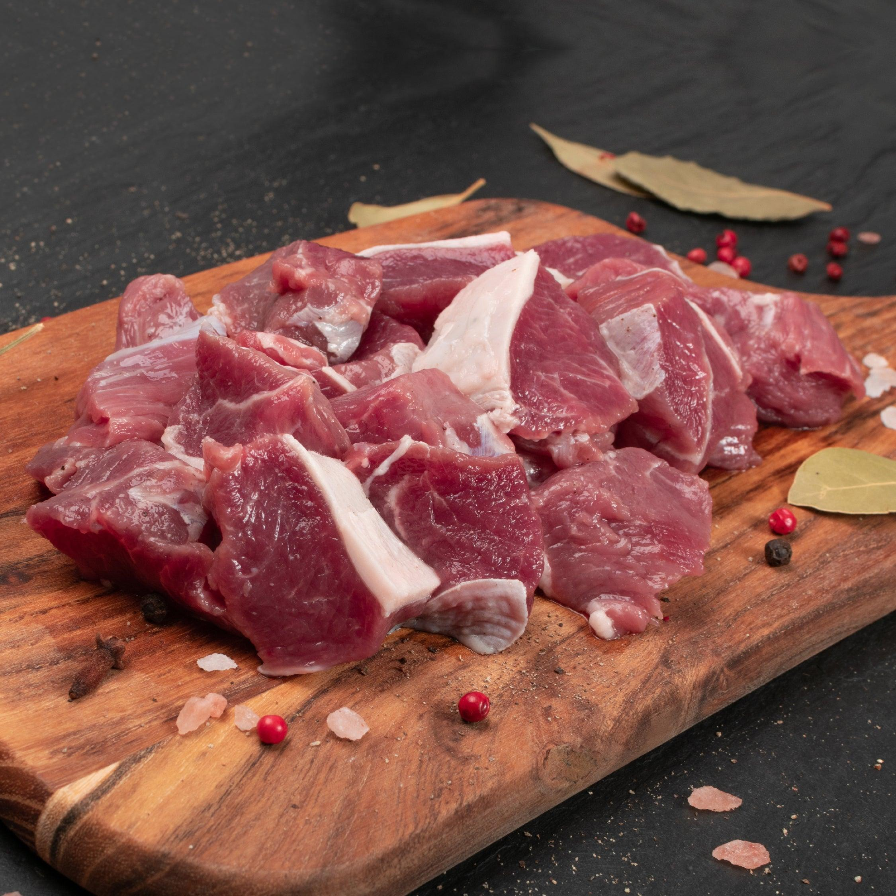
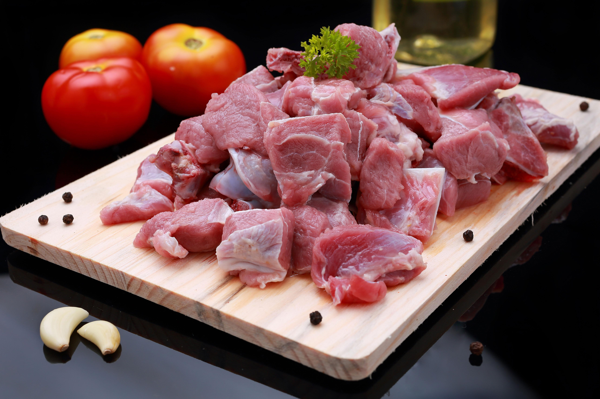
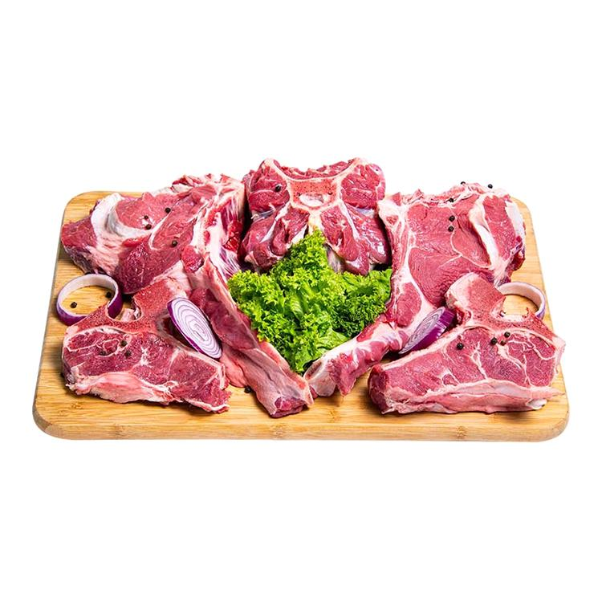
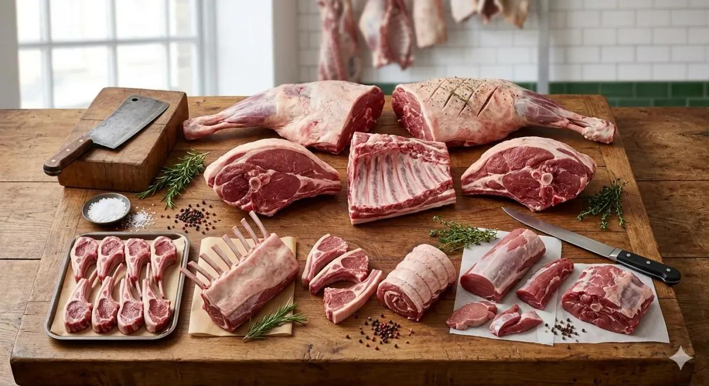
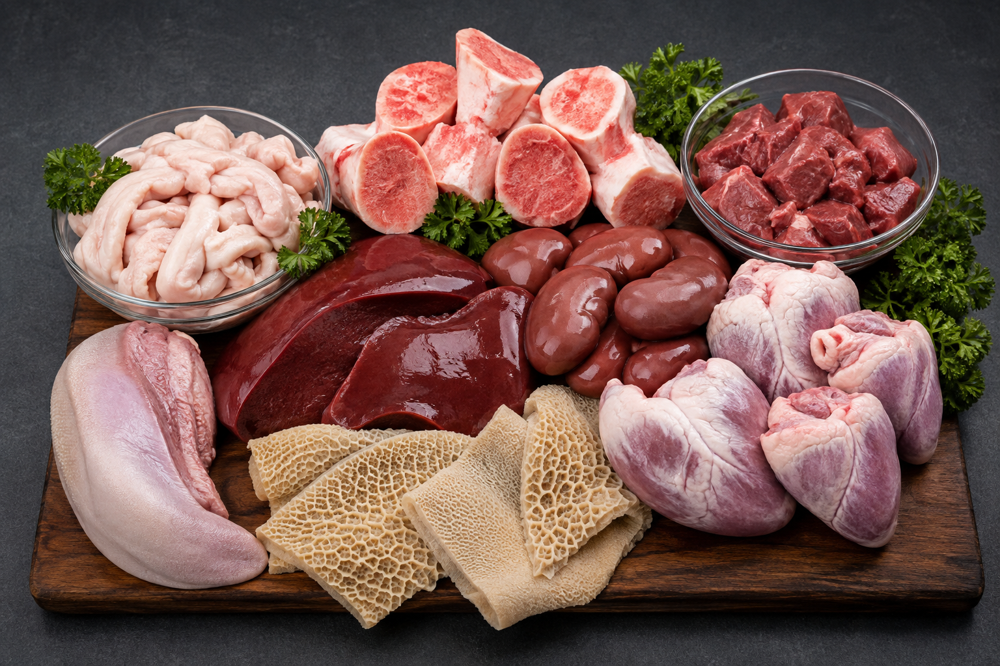

At Premium Slaughter House, we proudly offer a wide range of fresh, hygienically processed,
and 100% halal meat products. Every product is carefully inspected, processed under strict
hygiene standards, and packaged to preserve freshness and quality. Our experienced team ensures
that each order meets the highest food safety standards before it reaches our customers.
Whether you are a household, restaurant, hotel, supermarket, or catering business,
we are committed to providing premium-quality meat products you can trust.
Fresh Beef

Our Fresh premium Quality Chilled Beef

Hygienic Premium Quality Beef
Our premium beef is sourced from carefully selected healthy cattle and processed according to strict halal guidelines.
Every cut is inspected for quality, tenderness, and freshness before packaging. We offer a variety of beef cuts suitable
for households, restaurants, butcher shops, hotels,
and supermarkets. Our hygienic processing methods help preserve the natural flavor, nutritional value, and freshness of every product.
Available Cuts
Sirloin Steak
Ribeye
Tenderloin
Beef Mince
Beef Bones
Features
Fresh Daily
Hygienically Processed
100% Halal
Cold Stored
Fresh Mutton

Fresh Premium Quality Mutton

Premium Quality Chilled Mutton
Our premium mutton is processed with great care to deliver excellent taste, tenderness, and freshness. Every animal is selected based on quality
standards and handled using hygienic processing techniques.
We ensure that every cut of mutton maintains its natural flavor while meeting the highest standards of food safety and halal compliance.
Available Cuts
Leg
Shoulder
Chops
Mince
Whole Carcass
Features
Fresh Daily
Hygienically Processed
100% Halal
Cold Stored
Camel Meat
Fresh Premium Quality Camel Meat

Premium Quality Chilled Camel
Premium camel meat is carefully processed to maintain its nutritional value, freshness, and unique flavor. Rich in protein and lower
in fat than many other red meats, camel meat is a healthy option for many customers.
Our experienced staff ensures that every product is hygienically processed and packaged according to strict quality standards.
Available Cuts
Boneless
Mince
Steak
Ribs
Features
Fresh Daily
Hygienically Processed
100% Halal
Cold Stored
Premium Sheep Meat

Premium Quality Sheep Meat
Our sheep meat is prepared using modern processing methods while maintaining traditional halal practices. Every product is carefully
inspected to ensure freshness, tenderness, and excellent quality.
We provide premium sheep meat suitable for restaurants, hotels, catering businesses, and individual customers seeking high-quality halal products.
Available Cuts
Leg
Shoulder
Chops
Whole Carcass
Features
Fresh Daily
Hygienically Processed
100% Halal
Cold Stored
Fresh Meat By-Products

Fresh Halal Meat By-Products
In addition to premium meat products, we also provide a wide range of fresh halal by-products, including liver, heart, kidneys,
tongue, tail, bones, and other edible items. Every by-product is hygienically cleaned, carefully inspected, and professionally
packaged to ensure maximum freshness and quality for our customers.
Fresh Liver
Heart
Kidneys
Tongue
Tail
Bones
Fat
Other Fresh Halal By-Products
Professional Packaging
Every product is professionally packaged using hygienic, food-grade materials to maintain freshness during storage and transportation.
Our packaging methods help protect product quality while extending shelf life. We also provide customized packaging options to meet the
specific requirements of restaurants,
supermarkets, wholesalers, and distributors.
Our Premium Packaging Environment
Cold Storage and Quality Control
Our advanced cold storage facilities maintain the ideal temperature required to preserve freshness and food safety.
Every product undergoes strict quality inspections before packaging and distribution. By following modern storage techniques and continuous quality monitoring,
we ensure that customers receive premium meat products in excellent condition.
Premium Cold Storage Conditions
Why Customers Choose Our Products
Customers choose Premium Slaughter House because of our commitment to quality, hygiene, freshness, and customer satisfaction.
We combine experienced professionals, modern processing equipment, strict halal practices, and reliable delivery services to provide
products that consistently exceed customer expectations. Our dedication to excellence has helped us
build lasting relationships with individuals and businesses alike.
100% Halal Certified Processing
Fresh Daily Production
Strict Hygiene Standards
Modern Processing Equipment
Experienced Professional Staff
Premium Packaging
Cold Storage Facilities
Reliable Delivery Service
Price List
Premium Meat Product Price List
Product
Price(PKR/kg)
Availability
Fresh Chilled Beef
PKR 1,750
Available
Premium Frozen Beef
PKR 2,000
Available
Fresh Chilled Mutton
PKR 3,200
Available
Premium Frozen Mutton
PKR 3,600
Limited Stock
Fresh Chilled Sheep Meat
PKR 3,250
Available
Fresh Chilled Camel
PKR 1,450
Available
Click the button to learn more about our products.